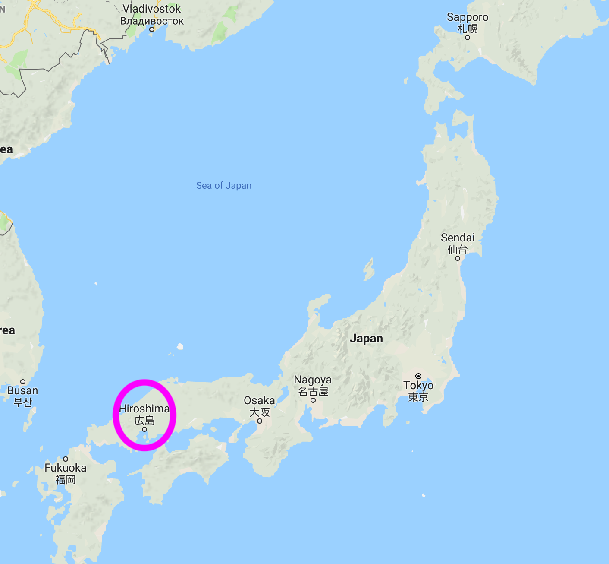
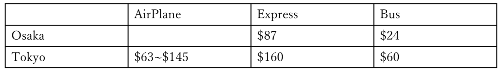
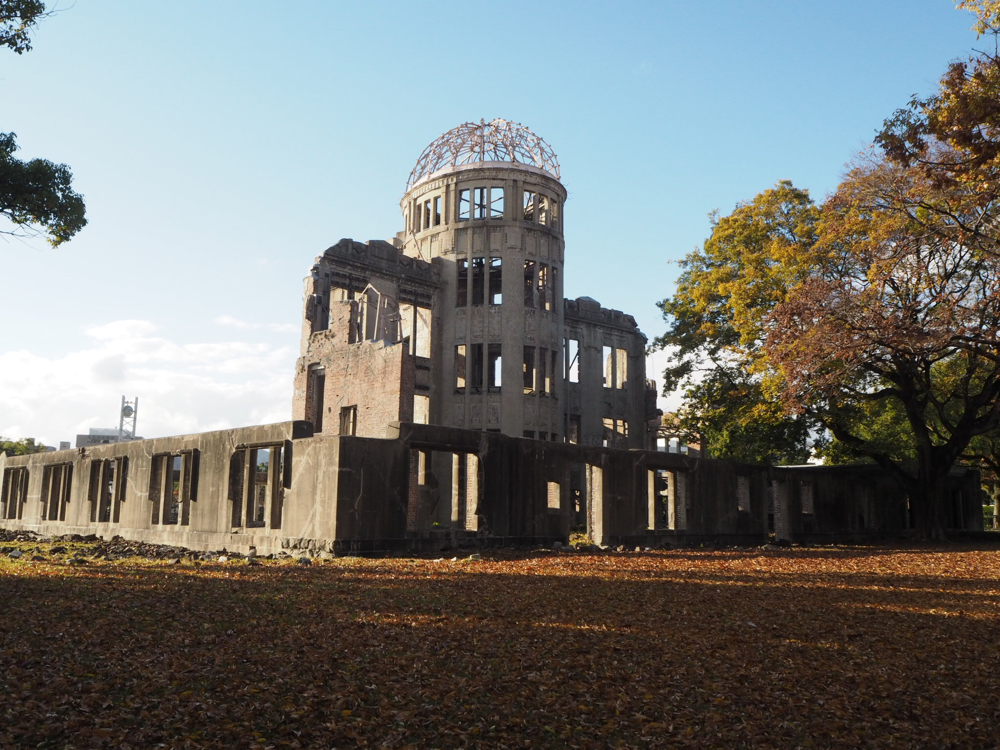
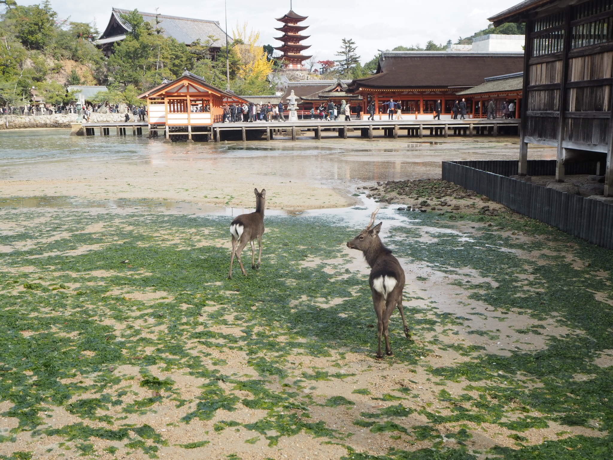
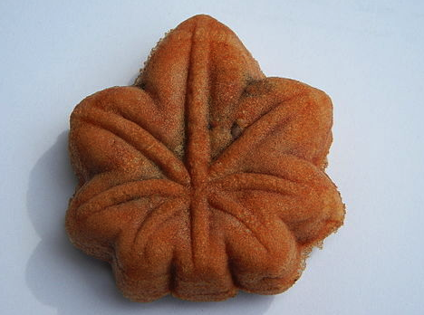
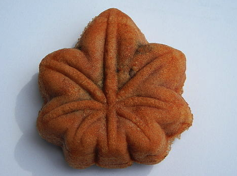

1. Where is Hiroshima and how to access?
 
2. Kure city：Yamato museum and Maritime Self-Defense Force Kure Museum


3. Hiroshima city：The atomic bomb Dorm and Peace Memorial Museum



Okonomiyaki is kind of Japanese traditional meal.
Some ingredients like fish, meat, noodle and vegetables are put on baked flour.

Finally, put on some seasoning and topping you like. Eat by chopsticks is usual way.
Staff makes them in front of you, so you can enjoy it's cooking process.
4. Miyazima：Itukushima temple and Misen climbing
Entrance fee is about $3.
The inside of the shrine is spacious, and you can walk around freely.
At low tide, you can get down on the sea. Wild deer come with you.


 

Thank you for reading until the end. I'm happy if you are interested in Japanese
culture even if only slightly. Hiroshima is not so far from Osaka and Kyoto as you
can make a round-trip in 1 day from there. Recently, more and more foreign tourists
are attracted and visit to Japan, according to this trend, more and more museum and
shops come to have brochure written in foreign languages. So don't hesitate to visit to Japan.